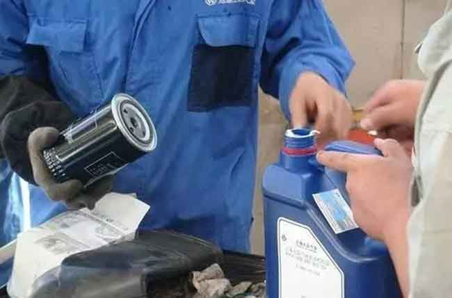

这商人呀，天生就是赚钱的。叫“死人的买卖有人做，赔本的买卖没人做”就是说，只要有利可图就一定会有人干这个生意。
这个做买车卖车生意的4S店呀，对于新车销售价格越来越透明，带来的就是利润越来越低了，甚至我的一些做汽车销售的朋友告诉我，赔钱卖车的4s店都有的是呀。
那4S店又不傻，总得赚钱吧，那汽车本身赚不了钱了，自然就会想办法在其他方面去赚消费者的钱。
其实，这种情况各行各业都有，只要你是小白用户，人家是专业的，那销售人员就能以各种看似“为你着想”的理由让你多掏钱，你在这种理由面前完全没有任何抗拒力，付完钱你心里总觉的哪里不对，却还要跟人家说声谢谢~
我相信大家都遇到过这种经历吧。
今天，小编就跟大家复盘一个，在汽车4S店做保养的时候，我们经常会遇到的这种温柔的坑人术。
温柔坑人术第一招：压缩免费首保周期
一般销售MM会跟你说，送你个免费首保项目，一听有免费的赠送，你会有什么反应，当然是兴高采烈、拍手称快呀，诶，还别高兴太早，之后，她们会告诉你，“不过呀，这个首保要在3000公里前来做，过了3000公里就不送了”
看到了吧，本来10000公里做一次保养的，她们能给缩短到7500公里，本来7500公里做一次保养的，能给缩短到3000公里。
汽车多长时间做一次保养，不是汽车4s店里说了算的，我没买车的时候不是有个质保手册嘛，上面说的是多少公里多长时间做一次保养，那个才是标准，我们严格按照那个做就可以了。
什么?我们这个地方堵车严重、空气不好，环境太差，要提前做保养。听到这样的话要警惕了啊，让你做保养的坑啊，总会披上一个美丽的理由。汽车保养手册的保养时间其实已经是非常保守的了，如果在这个时间之内出来大问题，那就是你汽车的质量有问题。所以这个时候要强势一些，我们只认保养手册上写的，白纸黑字就在那写着呢，难道你说他错了?如果真的错了，车子出了问题，你是可以投诉的啊。
温柔坑人术第二招：免费首保还花钱
当你做首保的时候，客服MM会把你引导到休息区，跑上一杯上等龙井，跟你能说“您先休息一下，这就安排首保去”，这服务态度和办事速度可谓非常快速和满意啊，可过了一会，客服MM又会过来跟你说“刚咱们技师看了下，说你的车磨合的不是太好，给你加一瓶抗磨剂，让发动机更耐磨，很便宜的，才88块钱”
是不是这种场景太多见了，如果你质疑“首保不是免费的吗”，他们会告诉你“免费只是基本项目，如果有其他额外保养项目是要收费的”，接下来就是各种劝、恐吓，反正让你接受他的推荐~
其实啊，现在的新车制造工艺都很高了，只要是按照保养手册就的要求正常开，车子都可以正常磨合，首保的项目一般就是换机油和机滤，如果推荐了其他的添加剂，那基本就是个坑，浪费钱，遇到这种情况，果断拒绝就是了。
温柔坑人术第三招：过渡保养
只要你进了4s店的门，那可就是过关斩将了，一会售后MM又跑过来告诉你“车子现在已经开了20000公里了，也该清洗一下油路、洗一洗节气门了”
保养手册上其实是没有写过这些的，如果你质疑了，他们又会用惯用的必杀技“保养手册都是基础保养” 等等等等带来给你解释一大堆理由，让你相信他的专业性。
4s店的过渡保养主要是传说中的“三洗”— 洗油路喷油嘴、洗冷却水箱水垢、洗节气门。我们做保养要长个心眼了。
温柔坑人术第四招：升级机油
售后MM还会推荐你说，“咱们车子开了3年了，有轻微磨损，给你推荐一款高级别机油，可以更加适合你的车子，让汽车动力焕发第二春”
其实啊，高级别机油确实好，但是多数情况下，对我们日常开车确实是个非常浪费。遇到这种情况，果断拒绝就是了。
温柔坑人术第五招：虚报机油使用量
做保养，4s店会告诉你说加4升机油，那你就要付4升机油的钱，可是如果实际只加了3.5升，那剩余的那0.5升，如果你不问，他们可能就要自己留下了，一个客户留0.5升那麽多客户积累下来，也是一笔不小的利润呀。
所以，加机油的时候，问清楚要加多少，等他们拿来了机油，你在旁边看，加了多少，剩下了多少，你心里都有数，那剩下的这些机油就是自己的。如果4s店可以给免费存呢，那就存在那，凑齐了4升，再来做一次保养就可以了。
也可以存到家里，可以用把盖子拧紧，顺便子啊用塑料袋封一下，放到一个阴凉的地方存放上半年是没问题的。
跟一些黑心4s店真是斗智斗勇啊，其乐无穷啊，希望今天对你有帮助.